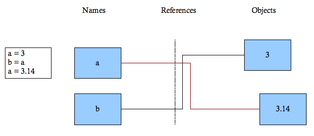

A very simple introduction to programming with Python#
Disclaimer: This material was originally created by Michael A. Johnston and Jordi Villà-freixa as the course material for a general introduction to Python at the MSc on Bioinformatics for Health Sciences at the Universitat Pompeu Fabra back in 2007. The material has not been updated much since then, although the original syntax on Python 2.x has been ported to Python 3.x. However, it is likely that some deprecated material is still present here. We would appreciate if you let me know in case you detect some.
Basic programming concepts#
Basic programming concepts! Only syntax change.
Programs operate on various “data types”: integers, strings, doubles
Concept of variable and assignment (variables in python do not need explicit declaration to reserve memory space). The
=sign is used to assign values to variables:
Age = 3
Expresions create and process data:
x>3
y=x*2
Control of flow: conditioning testing (if, else) and iterations (for, while loops)
Procedural programming: using functions to divide your program into logical chunks
What about Python?#
Dynamical, interpreted, object oriented programming language
Software quality: designed to be readable, coherent and maintainable
Developer productivity: very compact code (20-33% of the size of the corresponding java/C code): less code, so less to debug, so less to maintain, so less to learn
Check ThinkPython for starting material.
Why Python?
Reduce the time spent in programming & debugging: OOP, testing
Make it easy to extend your program: code reuse (OOP)
Reduce the time for others to understand your program: documentation, program readability
Structure of a program#
Programs are composed of
modulesModules contain statements
Function definitions
Control statements (if, while, etc)
Variable assignments: A variable must start with a letter or an underscore sign and contain just alphanumeric or underscore characters. Variable names are case-sensitive:
data=2 # correct
_data=4 # correct
/data=5 # incorrect
2data=6 # incorrect
da_ta=7 # correct
da@ta=8 # incorrect
Statements contain expressions:
x<3
a=x*x+2
Expressions create and process objects
Python keywords#
and del from not while
as elif global or with
assert else if pass yield
break except import print
class exec in raise
continue finally is return
def for lambda try`
Numbers#
Types: integer, floating point, long integers, bool (True, False)
Basic expression operators & precedence
Conversion: mixed types are converted up, e.g., Integers into floating point
40+3.1
Learn the available Arithmetic Operations in this notebook.
Dynamic typing#
Variable types are decided at runtime
a = '2'
b = 'house'
c,d=3.14,a
a=3
a,b,c,d
(3, 'house', 3.14, '2')
Variables are created when you assign values to them
Variables refer to an object, e.g., a number
The object has a type; the variable does not
When a variable appears in an expression, it is immediately replaced by the object it refers to
a=3
Create an object of type integer that represents the number
Create variable
aif it does not exist yetlink the variable
ato the new object3


Garbage collection#
When no variables are left that reference an object, it is destroyed (automatic memory management)

Data types#
Python has three main data types:
Integer
Float
String
You can use function type() to obtain the type of a given data
type(a),type(b),type(c)
(int, str, float)
TypeCasting changes the data type of a variable:
float(a),int(d),str(c)
(3.0, 2, '3.14')
Modules#
Every file containing python code whose name ends in
.pyis a moduleA module usually contains a number of items e.g. Variables and functions which you can access. These items are called attributes
You load a module using the import statement
Just like a number a module is an object
You can reload a module after changing it using the
reload()functionYou access modules attributes using the
.operator:myModule.myAttributeModules are the highest level way of organising your program
Large programs have multiple module files each of which contains related code
Documentation#
Documentation is one of the core parts of good programming
Python contains an inbuilt documentation mechanism using “doc strings”
For modules the doc string is the first string in the module file.
Doc strings must be enclosed in triple quotes.
A modules doc string is accessible through an attribute called
__doc__More on docstrings here
import os
os.access.__doc__
'Use the real uid/gid to test for access to a path.\n\n path\n Path to be tested; can be string, bytes, or a path-like object.\n mode\n Operating-system mode bitfield. Can be F_OK to test existence,\n or the inclusive-OR of R_OK, W_OK, and X_OK.\n dir_fd\n If not None, it should be a file descriptor open to a directory,\n and path should be relative; path will then be relative to that\n directory.\n effective_ids\n If True, access will use the effective uid/gid instead of\n the real uid/gid.\n follow_symlinks\n If False, and the last element of the path is a symbolic link,\n access will examine the symbolic link itself instead of the file\n the link points to.\n\ndir_fd, effective_ids, and follow_symlinks may not be implemented\n on your platform. If they are unavailable, using them will raise a\n NotImplementedError.\n\nNote that most operations will use the effective uid/gid, therefore this\n routine can be used in a suid/sgid environment to test if the invoking user\n has the specified access to the path.'
def phase_of_the_moon():
""""This function returns a slightly randomized
integer that shuffles data around in a way
convenient for the XYZ class."""
# Working code here.
return value
def something():
"""This is a first paragraph.
This is a second paragraph. The intervening
blank line means this must be a new paragraph."""
# ...
Module attributes#
__doc__is one of four special module attributes. The others are__name__- The module name__file__- The modules file name (complete path)__builtin__- Ignore for now*__builtin__- Ignore for now
All special names in python begin and end with
__You can see all the attributes of a module using the
dir()function, which returns a list data type - more on lists later.dir()returns a list of the attributes and methods of any object: modules, functions, strings, lists, dictionaries…
The import search path#
import sys
print(sys)
sys.path.append('/my/new/path')
print(sys.path)
<module 'sys' (built-in)>
['/Users/jordivilla/GitHub/Tools/pythonPrimer', '/Users/jordivilla/miniconda3/lib/python311.zip', '/Users/jordivilla/miniconda3/lib/python3.11', '/Users/jordivilla/miniconda3/lib/python3.11/lib-dynload', '', '/Users/jordivilla/miniconda3/lib/python3.11/site-packages', '/my/new/path']
import sys, os
print('sys.argv[0] =', sys.argv[0])
pathname = os.path.dirname(sys.argv[0])
print('path =', pathname)
print('full path =', os.path.abspath(pathname))
sys.argv[0] = /Users/jordivilla/miniconda3/lib/python3.11/site-packages/ipykernel_launcher.py
path = /Users/jordivilla/miniconda3/lib/python3.11/site-packages
full path = /Users/jordivilla/miniconda3/lib/python3.11/site-packages
Function basics#
We have already seen two functions -
reload()&dir()Functions are defined using the
defstatementAll code that is in the function must be indented
The function ends when the indentation level is the same as the def statement that created it.
The functions arguments are given in brackets after the name
Note you do not declare types in the argument list!
You can use any object as the arguments to a function: e.g. Numbers, modules and even other functions!
def mult(a, b):
if b == 0:
return 0
rest = mult(a, b - 1)
value = a + rest
return value
print("3 * 2 = ", mult(3, 2))
3 * 2 = 6
Recursivity#
QUESTION:Write a function for the factorial of a number
QUESTION:Write a function for counting down from a given integer
# example function
def count_down(n):
print(n)
if n > 0:
return count_down(n-1)
count_down(5)
5
4
3
2
1
0
# example function
def factorial(n):
if n <= 1:
return 1
return n * factorial(n - 1)
print("2! =", factorial(2))
print("3! =", factorial(3))
print("4! =", factorial(4))
print("5! =", factorial(5))
2! = 2
3! = 6
4! = 24
5! = 120
More on functions#
The function is not created until `def is executed
Like numbers and modules, functions are objects
When `def executes it creates a function object and associates a name with it.

Argument values#
Try this in a python script:
def ask_ok(prompt, retries=4, complaint='Yes or no, please!'):
while True:
ok = input(prompt)
if ok in ('y', 'ye', 'yes'):
return True
if ok in ('n', 'no', 'nop', 'nope'):
return False
retries = retries - 1
if retries < 0:
raise IOError('refusenik user')
print(complaint)
ask_ok('Do you really want to quit?')
ask_ok('OK to overwrite the file?', 2)
ask_ok('OK to overwrite the file?', 2, 'Come on, only yes or no!')
Lambda forms#
Lambda forms can be used wherever function objects are required. They are syntactically restricted to a single expression.
def make_incrementor(n):
return lambda x: x + n
f = make_incrementor(42)
print(f(0))
print(f(1))
42
43
Function documentation#
Like modules functions can also have doc strings.
The doc string is the first string after the function definition.
It must be enclosed in triple quotes ‘’’ ‘’’.
It is accessible through the attribute
__doc__.
Note on function arguments#
print(range(3, 6)) # normal call with separate arguments
args = [3, 6]
print(range(*args)) # call with arguments unpacked from a list
def cheeseshop(kind, *arguments, **keywords):
print("-- Do you have any", kind, '?')
print("-- I'm sorry, we're all out of", kind)
for arg in arguments: print(arg)
print ('-'*40)
for kw in keywords.keys(): print (kw, ':', keywords[kw])
cheeseshop('Limburger', "It's very runny, sir.",
"It's really very, VERY runny, sir.",
client='John Cleese',
shopkeeper='Michael Palin',
sketch='Cheese Shop Sketch')
range(3, 6)
range(3, 6)
-- Do you have any Limburger ?
-- I'm sorry, we're all out of Limburger
It's very runny, sir.
It's really very, VERY runny, sir.
----------------------------------------
client : John Cleese
shopkeeper : Michael Palin
sketch : Cheese Shop Sketch
Objects and attributes#
In python everything is an object.
Numbers
Functions
Modules
In python all objects have attributes
The
dir()function lists the attributes of any objectRemember objects also have types
Functions are of type function
Integers have type int etc.
Use the
type()function to get an objects type.
def function(n):
"""Print square values up to n."""
print('square values in the interval [', -n,',',n,']')
i=0
for x2 in range(-n, n+1):
print(x2,x2**2)
def fib(n):
# write Fibonacci series up to n
"""Print a Fibonacci series up to n."""
print('\nFibonacci serie up to ', n)
a, b = 0, 1
while b<n:
print(b,)
a,b=b,a+b
#n0 = int(input("Please enter an integer: "))
n0 = -3
if n0 < 0:
n0 = abs(n0)
print('Negative changed to absolute value', n0)
function(n0)
fib(n0)
Negative changed to absolute value 3
square values in the interval [ -3 , 3 ]
-3 9
-2 4
-1 1
0 0
1 1
2 4
3 9
Fibonacci serie up to 3
1
1
2
QUESTION:Create a module called firstExercise.py. Define the following functions and variables in the module:
A function called
objectDocumentionwhich takes one argument and returns the doc string of the argument.A function called
objectNamewhich takes one argument and returns its__name__attribute.A function called
multiply(a, b)which returnsa * b. Try passing objects other than numbers.A function called
integerMultiply(a,b)which converts its arguments to integers before multiplying them. Hint: Use the functionint()to convert objects to integers. Try with mixed numbers and strings.Load the module from the interactive shell and test it.
QUESTION:Write a program (Python script) named madlib.py, which asks the user to enter a series of nouns, verbs, adjectives, adverbs, plural nouns, past tense verbs, etc., and then generates a paragraph which is syntactically correct but semantically ridiculous.
Coercion#
Converting an object from one type to another is called coercion
>>> x=2
>>> y=3.
>>> coerce(x,y)
(2.0, 3.0)
However not all objects can be coerced.
When performing numeric operations the object with the smaller type is converted to the larger type.
When using
andororthe left hand operand is converted to a bool.The standard coercion functions for the types we have seen so far are
int(),float(),str(),bool()
Bool conversions#
Any non-zero number or non-empty object converts to
TrueA zero number or an empty object is
False.
Operator overloading#
Operators that perform different actions depending on the types of the operands are said to be {\em overloaded
*Multiplies when the operands are both numbers
Replicates when one is a number and the other a string
+Adds when the operands are both numbers
Concatenates when the operands are both strings.
Many operators in python are overloaded.
Notice that when the operands do not support the operator python raises an error. There is no point in checking your self.
Also when the operators meaning is ambiguous an error is raised: using
+with a string and a number - addition or concatenation?
Some other terminology#
Assigning an object to a name e.g.
a = 3,firstFunction = secondFunction, is often called {\em binding.Changing what a name refers to is called {\em rebinding.
a = 3Binds the name a to the object 3a = "aString"Rebinds the name a to the object “aString”
Strings#
A string is an ordered collection of characters.
They are immutable i.e. They cannot be changed.
You can create strings using
Double quotes - “”
Single quotes - ‘’
Triple quotes ‘’’ ‘’’ - i.e. Doc strings.
Double and single quotes are the same
Triple quotes create block strings which can span multiple lines.
hello = "This is a rather long string containing\n\
several lines of text just as you would do in C.\n\
Note that whitespace at the beginning of the line is\
significant."
print(hello)
This is a rather long string containing
several lines of text just as you would do in C.
Note that whitespace at the beginning of the line is significant.
Basic String Operations#
We’ve already seen
*(replicate) and+(concatenate)Since strings are ordered collection of characters we can access their components by {\em indexing
The first character in the string has position 0.
The position of the last character is equal to the number of characters in the string -1.
[]is the index operatoraString = "Genial"aString[1]You can also index from the end using negative numbers
aString[-1](This is the position = number of characters in the string -1)"Genial"length is 6"Genial"[-1]is position6 - 1 = 5 ("l")
Slicing#
Slicing takes specified parts of a string and creates a new string.
[start:end]Take from position start up to but not including position endAstring[1:3]If
startis blank i.e.[:end]. It means from the first positionIf
endis blank i.e.[start:]. It means go to the last positionExtended slicing
[start:end:step][1:10:2]- Get the characters from 1 to 10 taking steps of 2.
String examples#
word = 'Help' + 'A'
print(word)
'<' + word*5 + '>'
HelpA
'<HelpAHelpAHelpAHelpAHelpA>'
Some examples:
>>> 'str' 'ing' # <- This is ok
'string'
>>> 'str'.strip() + 'ing' # <- This is ok
'string'
>>> 'str'.strip() 'ing' # <- This is invalid
File "<stdin>", line 1, in ?
'str'.strip() 'ing'
^
SyntaxError: invalid syntax
word[0] = 'x' # ERROR! you cannot assign an item to a str object or part of it. In other words..
# ... str are ummutable
---------------------------------------------------------------------------
TypeError Traceback (most recent call last)
Cell In[17], line 1
----> 1 word[0] = 'x'
TypeError: 'str' object does not support item assignment
print(word[-2:]) # The last two characters
print(word[-100:])
print(word[-10]) # ERROR
string1 = "A, B, C, D, E, F"
print("String is:", string1)
print("Split string by spaces:", string1.split())
print("Split string by commas:", string1.split( "," ))
print("Split string by commas, max 2:", string1.split( ",", 2 ))
Removing leading and/or trailing characters in a string:
string1 = "\t \n This is a test string. \t\t \n"
print('Original string: "%s"\n' % string1)
print('Using strip: "%s"\n' % string1.strip())
print('Using left strip: "%s"\n' % string1.lstrip())
print('Using right strip: "%s"\n' % string1.rstrip())
Lists#
Lists contain ordered collections of any type of object: Numbers, strings, other lists.
List Properties:
Mutable
Can change the object at any position
Can add and remove items from a list (more later)
Heterogenous
Can contain a mixture of data
Creating a list
myList = []myList = [3, 4, "Jordi"]myList = ["aString", [3, 4, "Jordi"]]
List Operations#
A list like a string is a sequence. All the operators that work on strings work on lists (more {\em overloading
*(replication)+(concatenation)[](indexing)[:](slicing)In addition a list is mutable - you can assign to list positions
Index assignment:
myList[3] = "Hello"Slice assignment:
MyList[0:3] = [0,1](Two steps: Deletion - the slice on the left is deleted; Insertion - the slice on the right is inserted in its place.Trying to access a position that does not exist in a sequence is an error
The function
len()returns the number of items in a sequence.There are two more sequence operators
xin sequence evaluates as True if the object x is in the sequence or false if its not. e.g.3 in [1,2,3],"J" in "Jordi"xnot in sequence, the opposite of in.
Examples with lists#
>>> q = [2, 3]
>>> p = [1, q, 4]
>>> len(p)
3
>>> p[1]
[2, 3]
>>> p[1][0]
2
>>> p[1].append('xtra')
>>> p
[1, [2, 3, 'xtra'], 4]
>>> q
[2, 3, 'xtra']
Shallow vs Deep list copy#
Shallow Copy: (copies chunks of memory from one location to another)
a = ['one','two','three']
b = a[:]
b[1] = 2
print(id(a), a)
print(id(b), b)
Deep Copy: (Copies object reference)
a = ['one','two','three']
b = a
b[1] = 2
print(id(a), a)
print(id(b), b)
The del statement#
a = [-1, 1, 66.25, 333, 333, 1234.5]
del a[0]
print(a)
del a[2:4]
print(a)
del a[:]
print(a)
if statement#
if test1:
<statements1>
elif test2:
<statements2>
else:
<statements3>
All code that exists in the if statement must be indented (there are no braces etc.)
Expression is any python expression that evaluates to a boolean i.e
TrueorFalse
#x = int(input("Please enter an integer: "))
x = 3
if x < 0:
x = 0
print('Negative changed to zero')
elif x == 0:
print('Zero')
elif x == 1:
print('Single')
else:
print('More')
while loop#
while test:
<statements>
Repeatedly executes
<statements>untiltestis true
# Fibonacci series:
# the sum of two elements defines the next
a, b = 0, 1
while b < 100:
print(b)
a, b = b, a+b
for loop#
for <target> in <object>:
<statements>
When python runs this loop it assigns the elements in
<object>, one by one to the variable<target>Remember
<target>is only a reference to an item in the sequence. Rebinding<target>does not change the item in the sequence.To change the elements of a list you need to use the
range()function.
QUESTION:try changing the characters of "Peter" to "Roman" by different methods (use while, for, …)
for loop examples#
>>> # Measure some strings:
a = ['cat', 'window', 'defenestrate']
for x in a:
print(x, len(x))
for x in a[:]: # make a slice copy of the entire list
if len(x) > 6: a.insert(0, x)
print(a)
a.insert(len(a), x) is equivalent to a.append(x)
a = ['Mary', 'had', 'a', 'little', 'lamb']
for i in range(len(a)):
print(i, a[i])
Loop statements#
breakJumps out of the innermost loop. Use when you want a loop to end immediately due to some condition being reachedcontinueJumps to the top of the innermost loop. Use when you dont want to execute any more code for this iterationpassfor empty loopselseblock, Executed if a loop was not exited due to a break statement
Some examples#
for n in range(2, 10):
for x in range(2, n):
if n % x == 0:
print(n, 'equals', x, '*', n/x)
break
else:
# loop fell through without finding a factor
print(n, 'is a prime number')
Example of using pass:
while True:
pass # Busy-wait for keyboard interrupt (Ctrl+C)
List comprehensions#
li = [1, 9, 8, 4]
print(li)
li = [elem*2 for elem in li]
print(li)
look at it from right to left. li is the list you’re mapping
vec1 = [2, 4, 6]
vec2 = [4, 3, -9]
print([x*y for x in vec1 for y in vec2])
print([x+y for x in vec1 for y in vec2])
print([vec1[i]*vec2[i] for i in range(len(vec1))])
print([str(round(355/113.0, i)) for i in range(1,6)])
params = {"server":"mpilgrim", "database":"master", "uid":"sa", "pwd":"secret"}
["%s=%s" % (k, v) for k, v in params.items()]
";".join(["%s=%s" % (k, v) for k, v in params.items()])
Files#
The file object in python represents a file that you can read from and write to
Unlike the other python objects you can not use operators on them e.g.
+,*, `[] etc.Creation
myFile = open(location)
Some Methods
read()readline()readlines()write()writelines()close()
File manipulation examples#
fileHandle = open('test.txt', 'w') # write mode
fileHandle.write('Testing files in Python.\neasily')
fileHandle.close()
fileHandle = open('test.txt', 'a') # append mode
fileHandle.write('\n\n\nBottom line.')
fileHandle.close()
fileHandle = open('test.txt') # read mode (default)
print(fileHandle.read())
fileHandle.close()
File manipulation examples#
fileHandle = open ( 'test.txt' )
print(fileHandle.readline())
print(fileHandle.tell()) # position within the file
print(fileHandle.readline())
fileHandle = open ( 'test.txt' )
print(fileHandle.read ( 1 ))
print(fileHandle.seek ( 4 ))
print(fileHandle.read ( 1 ))
More sophisticated file manipulation#
http://docs.python.org/library/glob.html
import os, glob, shutil
from os.path import expanduser
home = expanduser("~") #adding your $HOME directory to th
'''
file_ext = input("Extension for the files:\n")
file_count = int(input("Files count in each new dir:\n"))
dir_base_name = input("name base for dirs:\n")
'''
file_ext = "fasta"
file_count = 10
dir_base_name = home+'/Downloads/'
filenames = glob.glob(('files/*.' + file_ext))
filenames.sort()
print(filenames)
dir_number = 0
while filenames:
dir_number += 1
new_dir = dir_base_name + str(dir_number)
os.mkdir(new_dir)
for n in range(min(file_count, len(filenames))):
src_file = filenames.pop(0)
shutil.copy(src_file, new_dir)
os.unlink(src_file)
Methods#
We have seen that everything in python is an object and that all objects have attributes. The attributes can have different types e.g string, int, function
Another type of attribute an object can have is called a {\em method
An objects methods are special functions that operate on the object itself.
invoked with
object.method()the method does something with objectSome objects like modules have no methods or very rarely used methods e.g. Functions and numbers.
Lists and strings have many very commonly used methods.
Example: String methods#
Here are some string methods
capitalizecountfindindexsplitSome methods take arguments, others don’t.
Check String Methods.
Check Built-in types.
Object attributes#
We have seen that objects can have many attributes and that all attributes are objects. (Remember
dir())Generally an object’s attributes are divided into two types
Callable - They can perform some action and return a result: Functions, methods
Not callable - Everything else (strings, lists, numbers etc.)
You can check if an object is callable using the
callable()function.Another useful function is
getattr(). It returns an attribute of an object if you know its name as a string.
li = ["Larry", "Curly"]
print(getattr(li, "pop"))
Augmented assignment#
Based on C
Short hand for writing common expressions
Traditional:
X = X + YAugmented:
X += YX *= Y,X -=Y,X /= Yetc.Less typing
Automatically chooses optimal method
L = L + [3,4]
L.extend([3,4])
L += [3,4] # Automatically chooses extend
Formatting#
String formatting#
\%
Format operator.
You place a string to the right of the operator with conversion targets embedded in it.
A conversion target is a
\%followed by a letter. The letter indicates the conversion to be performedOn the right of the format operator you place, in parentheses, one object for each conversion target in the string.
Python inserts each object into the string, the first at the first conversion target etc, performing the necessary conversion first.
"Name \%s. Age \%d" \% ("Joe", 52)
Extended formatting#
Since all basic objects in python have a string description usually
\%sis all thats neededHowever with numbers more control is often required:
\%d,\%e,\%E,\%fExtended formatting syntax:
\%[flags][width][.precision]codeFlags:
-left justify+add plus for positive numbers0pad with zeros
Width is the maximum width the conversion can have
.precisionis the number of places after the decimal point.
String formatting vs. concatenating#
uid = "sa"
pwd = "secret"
print(pwd + " is not a good password for " + uid)
print("%s is not a good password for %s" % (pwd, uid))
userCount = 6
print("Users connected: %d" % (userCount, ) )
print("Users connected: " + userCount) # Error, trying to concatenate str with int
Tuples#
A tuple is an immutable list with no methods
Ordered collection of arbitrary objects
Creation
()e.g.(3, "Name"),e.g.3, "Name(Not advisable)
A tuple with a single element is a special case:
(40,)- require a trailing commaCan be operated on by all the immutable sequence operators
*,+,[],[:],in
Accessed by position starting from 0
Use
len()to get length of a tupleNote than only the tuple is immutable. Mutable objects in a tuple are still mutable.
Tuples provide integrity (one needs to be sure that something cannot be changed)
Using tuples to assign values#
>>> v = ('a', 'b', 'e')
>>> (x, y, z) = v
>>> x
'a'
>>> y
'b'
>>> z
'e'
v is a tuple of three elements, and (x, y, z) is a tuple of three variables.
Sequence conversion#
Like
int(),float()etc. there are functions for converting objects to lists & tuples.list()tuple()
These functions can only coerce objects that are also sequences i.e. strings, lists, tuples
list(3)- will not worklist("3")- will work
Sequence functions#
filter()Filters the elements of a sequence based on a function and produces a new sequence
map()Applies a function to every element of a sequence and returns a list of the results.
It can be used with multiple lists
zip()Takes any number of lists as arguments
Returns a list of tuples where the first contains the first element of each sequence, the second the second element of each etc.
foo = [2, 18, 9, 22, 17, 24, 8, 12, 27]
print(filter(lambda x: x % 3 == 0, foo))
print(map(lambda x: x * 2 + 10, foo))
Example of the use of filter#
def odd(n):
return n%2
li = [1, 2, 3, 5, 9, 10, 256, -3]
filter(odd, li)
filteredList = []
for n in li:
if odd(n):
filteredList.append(n)
print(filteredList)
oddreturns 1 if n is odd and 0 if n is even.filtertakes two arguments, a function (odd) and a list (li). It loops through the list and calls odd per element.You could accomplish the same thing with a for loop. But at the cost of less compact code.
Example of the use of zip#
mat = [
[1, 2, 3],
[4, 5, 6],
[7, 8, 9],
]
a =zip(*mat)
print(list(a))
names = ["Jesus","Marc","Michal","Graham"]
places = ["Spain","USA","Poland","UK"]
combo = zip(names,places)
who = dict(combo)
print(who)
Examples of the use of map#
# let us split a sentence and count how many characters each word contains
# first we split it
listofWords = 'It is raining cats and dogs'.split()
# now we apply the function len to each word
# take notice that map returns an iterator, which we can then convert into a list
listofLengths = list(map(lambda w: len(w),listofWords))
print(listofLengths)
Exercises#
QUESTION:Write a code that computes the prime numbers up to 50 (hint: use the filter() function)
QUESTION:Write a code that writes a value table (x,f(x)) for f(x)=sin(x) (hint: use the map() function)
Dictionaries#
Dictionaries are mappings and so are iterable (see https://realpython.com/iterate-through-dictionary-python/)
Unordered collection of objects (Python 3 includes order)
Access items via a key (case sensitive)
Very fast retrieval
Mutable
Creation
{}- an empty dictionary{'age': 40, 'name': "unknown"}
Check also defaultdict in collections
Example dictionaries#
d = {"server":"mpilgrim", "database":"master"}
print(d["server"])
print(d["database"])
d["database"] = "pubs"
d["uid"] = "sa" # adding a keyword
print(d)
del d['uid'] # removing a keyword
print(d)
# another practical way of creating a dictionary.
keys = ['pere','manel','jordi','aina','teresa']
values = [25,'pèsols','[1,2,3]',d]
print(zip(keys,values))
d2 = dict(zip(keys, values))
pk = input('give me the name of a possible key in your dictionary: ')
if pk in d2:
print(pk,' is a key')
else:
print('wrong key')
Dictionary operations#
Accessing
Dict[key]
len()- Returns the number of stored entries
Assignment
Dict[key] = object
Removal
del Dict[key]
The
delstatement can be used with lists or attributes etc.Construction
dict(zip(keys, values))
Dictionary methods#
Some typical methods for dictionaries:
keys()values()copy()
Naming convention#
Function names should describe what the function does.
The more general the better though there is a balance.
Name should be enough to give an idea of what it does.
General does not mean short! Use full words
Arguments names should be as general as possible: object, aString, aFunction, comparisonFunction.
A variabe name should describe what it is.
Use full words.
You should not use reserved words.
Names beginning and ending in two
__are system defined names and have a special meaning for the interpreter.
Finding substrings#
dna = """ttcacctagtctaggacccactaatgcagatcctgtg
tgtctagctaagatgtattatatctatattcactgggcttattgggccaa
tgaaaatatgcaagaaaggaaaaaaaagatgtagacaaggaattctattt"""
E='gat'
print(dna.find(E))
print(dna.index(E))
Try looking for a non-existing substring with both methods
QUESTION:Write a function that returns the list of codons for a DNA sequence and a given frame
Regular expressions#
A regular expression is a pattern that a string is searched for. Unix commands such as “rm .” are similar to regular expressions, but the syntax of regular expressions is more elaborated. Several Unix programs (grep, sed, awk, ed, vi, emacs) use regular expressions and many modern programming languages (such as Java) also support them.
import re
m = re.search('(?<=abc)def', 'abcdef')
print(m.group(0))
m = re.search('(?<=-)\w+', 'spam-egg')
print(m.group(0))
m = re.match(r"(\w+) (\w+)", "Isaac Newton, physicist")
print(m.group(0),'|', # The entire match
m.group(1),'|', # The first parenthesized subgroup.
m.group(2),'|', # The second parenthesized subgroup.
m.group(1, 2)) # Multiple arguments give us a tuple.
Writing regex#
compile()Compile a regular expression pattern into a regular expression object, which can be used for matching using itsmatch()andsearch()methodssearch()Scan through string looking for a location where the regular expression pattern produces a match, and return a corresponding MatchObject instance.match()If zero or more characters at the beginning of string match the regular expression pattern, return a corresponding MatchObject instancesplit()Split string by the occurrences of pattern
In Python, a regular expression is first compiled:
line = "Compile a regular expression pattern into a regular expression object, which can be used for matching using its match() and search() methods"
keyword = re.compile(r"for ")
print(keyword.search(line))
print(not keyword.search(line))
keyword = re.compile(r"the ",re.I) #for insensitive search
re.finditer()#
import re
s1 = 'We are testing the use of finditer'
pattern = 'testing'
for match in re.finditer(pattern, s1):
s = match.start()
e = match.end()
print('String match "%s" at %d:%d' % (s1[s:e], s, e))
QUESTION:Given a string of A, C, T, and G, and X, find a string where X matches any single character, e.g., CATGG is contained in ACTGGGXXAXGGTTT.
QUESTION:Write a regular expression to extract the coding sequence from a DNA string. It starts with the ATG codon and ends with a stop codon (TAA, TAG, or TGA).
import re
print(re.findall(r'\bf[a-z]*', 'which foot or hand fell fastest'))
print(re.sub(r'(\b[a-z]+) \1', r'\1', 'cat in the the hat'))
'tea for too'.replace('too', 'two')
#!/usr/bin/env python
import re
from urllib.request import urlopen
html = urlopen("http://docs.python.org/howto/regex.html").read()
print(type(html))
# compiling the regular expression:
keyword = re.compile(r"the ")
# searching the file content line by line:
for line in str(html):
if keyword.search(line):
print(line,)
Exercises#
Write scripts that
QUESTION: Retrieve all lines from a given file that do not contain “the “. Retrieve all lines that contain “the ” with lower or upper case letters (hint: use the ignore case option)
QUESTION: Retrieve lines from a long sequence (eg, CFTR) that contain a given codon, and then a given first and third letter for each triad
QUESTION: Write a script that asks users for their name, address and phone number. Test each input for accuracy, for example, there should be no letters in a phone number. A phone number should have a certain length. An address should have a certain format, etc. Ask the user to repeat the input in case your script identifies it as incorrect.
QUESTION: Download the sequence of the CFTR gene and create a python program able to:
obtain the content of G and C
transcribe it into RNA sequence
get its complementary DNA sequence
get its reverse complementary DNA sequence
plot a histogram for the frequency of the different DNA codons in the sequence, ordering the codons by frequency in the X axis
Classes#
Classes: Some defs#
Namespace mapping from names to objects. There is absolutely norelation between names in different namescapes (different local names in a function invocation, for example; that is why we prefix them with the name of the function, for example).
Scope textual region of a Python program where a namespace is directly accessible.
Attributes anything you can call in the form:`object.attribute (data and methods).
Instance objects created by {\em instantiation of classes.
Global vs local variables#
A variable created inside a function exclusively belongs to its local scope (variable result below). Instead, a variable created in the main body of the code is a global variable and belongs to the global scope of the code (variabl first below)
#!/usr/local/bin/python
"""http://www.wellho.net/resources/ex.php4?item=y105/locvar.py"""
# Variable scope
first = 1
def one():
"Double a global variable, return it + 3."
global first # try commenting out this line. This will teach you that one issue is "using"
# and something different modifying a global variable within a function. For the
# latter, you need the global keyword
first *= 2 # note that here we modify a global variable (see above comment)
result = first+3
return result
print(one.__doc__)
print(one())
print(one())
print(one())
print("first now has the value",first)
print("result has the value",result) # ERROR
Double a global variable, return it + 3.
4
4
4
first now has the value 1
---------------------------------------------------------------------------
NameError Traceback (most recent call last)
/Users/jordivilla/GitHub/Tools/pythonPrimer/BasicPythonIntro.ipynb Cell 109 line 2
<a href='vscode-notebook-cell:/Users/jordivilla/GitHub/Tools/pythonPrimer/BasicPythonIntro.ipynb#Y204sZmlsZQ%3D%3D?line=18'>19</a> print(one())
<a href='vscode-notebook-cell:/Users/jordivilla/GitHub/Tools/pythonPrimer/BasicPythonIntro.ipynb#Y204sZmlsZQ%3D%3D?line=19'>20</a> print("first now has the value",first)
---> <a href='vscode-notebook-cell:/Users/jordivilla/GitHub/Tools/pythonPrimer/BasicPythonIntro.ipynb#Y204sZmlsZQ%3D%3D?line=20'>21</a> print("result has the value",result) # ERROR
NameError: name 'result' is not defined
A first example of a class#
#! /usr/bin/python
"""house.py -- A house program. """
class House(object):
"""Some stuff """
my_house = House() # class instantiation
my_house.number = 40 # data attribute
my_house.rooms = 8
my_house.garden = 1
print("My house is number", my_house.number)
print("It has", my_house.rooms, "rooms")
if my_house.garden:
garden_text = "has"
else:
garden_text = "does not have"
print("It", garden_text, "a garden")
A second example of a class#
#! /usr/bin/python
"""house2.py -- Another house.
"""
class House(object):
def __init__(self, number, rooms, garden):
self.number = number
self.rooms = rooms
self.garden = garden
my_house = House(20, 1, 0)
print("My house is number", my_house.number)
print("It has", my_house.rooms, "rooms")
if my_house.garden:
garden_text = "has"
else:
garden_text = "does not have"
print("It", garden_text, "a garden")
Adding methods#
#! /usr/bin/python
"""square.py -- Make some noise about a square.
"""
class Square:
def __init__(self, length, width):
self.length = length
self.width = width
def area(self):
return self.length * self.width
my_square = Square(5, 2)
print(my_square.area())
Some terminology#
A class creates a new type where objects are instances of the class.
The ‘functions’ that are part of an object are called methods.
The fields and methods are called ‘attributes’.
You can examine all the methods and attributes that are associated with an object using the dir command :
print(dir(some\_obj)Fields are of two types - they can belong to each instance/object of the class or they can belong to the class itself. They are called instance variables and class variables respectively.
Arrays and classes#
#! /usr/bin/python
"""person.py -- A person example.
"""
class Person(object):
def __init__(self, age, house_number):
self.age = age
self.house_number = house_number
alex = []
for i in range(5):
obj = Person(i, i)
alex.append(obj)
print("Alex[3] age is", alex[3].age)
print
for alexsub in alex:
print("Age is", alexsub.age)
print("House number is", alexsub.house_number)
Exercises#
QUESTION:Write a simple program that reads from a CSV file containing a list of names, addresses, and ages and returns the name, address and age for a particular person upon request. QUESTION:Extend the above program to include e-mail addresses and phone numbers to the student’s data. Hint
Exceptions#
>>> while True print('Hello world')
File "<stdin>", line 1, in ?
while True print('Hello world')
^
SyntaxError: invalid syntax
QUESTION: try to correct these lines
10 * (1/0)
4 + spam*3
'2' + 2
Handling exceptions#
#!/usr/bin/env python
#
# Program to read and print(a file
import sys
try:
file = open("alice.txt","r")
except IOError:
print("Could not open file")
sys.exit(0)
text = file.readlines()
file.close()
for line in text:
print(line,)
print()```
... except (RuntimeError, TypeError, NameError):
... pass
>>> def this_fails():
... x = 1/0
...
>>> try:
... this_fails()
... except ZeroDivisionError as detail:
... print('Handling run-time error:', detail
...
Handling run-time error: integer division or modulo by zero
>>> def divide(x, y):
... try:
... result = x / y
... except ZeroDivisionError:
... print("division by zero!"
... else:
... print("result is", result
... finally:
... print("executing finally clause"
...
>>> divide(2, 1)
result is 2
executing finally clause
>>> divide(2, 0)
division by zero!
executing finally clause
>>> divide("2", "1")
executing finally clause
Traceback (most recent call last):
File "<stdin>", line 1, in ?
File "<stdin>", line 3, in divide
TypeError: unsupported operand type(s) for /: 'str' and 'str'
User defined exceptions#
>>> class MyError(Exception):
... def __init__(self, value):
... self.value = value
... def __str__(self):
... return repr(self.value)
...
>>> try:
... raise MyError(2*2)
... except MyError as e:
... print('My exception occurred, value:', e.value
...
My exception occurred, value: 4
>>> raise MyError('oops!')
Traceback (most recent call last):
File "<stdin>", line 1, in ?
__main__.MyError: 'oops!'
User defined exceptions#
class Error(Exception):
"""Base class for exceptions in this module."""
pass
class InputError(Error):
"""Exception raised for errors in the input.
Attributes:
expr -- input expression in which the error occurred
msg -- explanation of the error
"""
def __init__(self, expr, msg):
self.expr = expr
self.msg = msg
Command line arguments#
# example on how to use command line arguments in python with getopt
import getopt, sys
def main():
try:
opts, args = getopt.getopt(sys.argv[1:], "ho:", ["help", "output="])
except getopt.GetoptError:
# print(help information and exit:
usage()
sys.exit(2)
output = None
for o, a in opts:
if o in ("-h", "--help"):
usage()
sys.exit()
if o in ("-o", "--output"):
output = a
#...
if __name__ == "__main__":
main()```
BioPython#
Set of modules and packages for biology (sequence analysis, database access, parsers…). \tiny \url{http://biopython.org/DIST/docs/tutorial/Tutorial.html \url{http://biopython.org/DIST/docs/api/ \normalsize
Examples#
>>> from Bio.Seq import Seq
>>> my_seq = Seq("AGTACACTGGT")
>>> my_seq
Seq('AGTACACTGGT', Alphabet())
>>> print(my_seq
AGTACACTGGT
>>> my_seq.alphabet
Alphabet()
>>> my_seq.complement()
Seq('TCATGTGACCA', Alphabet())
>>> my_seq.reverse_complement()
Seq('ACCAGTGTACT', Alphabet())
Exercises#
QUESTION:Search for CFTR nucleotide sequences in the NCBI server. Save the sequences as FASTA and GeneBank. Using the SeqIOparser extract the sequences from the files and print them on screen.
QUESTION:Download an alignment for the CFTR protein entries from PFAM (use the seed for ABC transporters). Using the AlignIO parser, extract the sequences from FASTA or Stocholm formatted files downloaded from PFAM.
# Import libraries
from Bio import pairwise2
from Bio.Seq import Seq
# Creating sample sequences
seq1 = Seq("TGTGACTA")
seq2 = Seq("CATGGTCA")
# Finding similarities
alignments = pairwise2.align.globalxx(seq1, seq2)
# Showing results
for match in alignments:
print(match)
See, better, MultipleSeqAlignment
Converting between sequence alignment formats#
from Bio import AlignIO
L="""# STOCKHOLM 1.0
#=GS COATB_BPIKE/30-81 AC P03620.1
#=GS COATB_BPIKE/30-81 DR PDB; 1ifl ; 1-52;
#=GS Q9T0Q8_BPIKE/1-52 AC Q9T0Q8.1
#=GS COATB_BPI22/32-83 AC P15416.1
#=GS COATB_BPM13/24-72 AC P69541.1
#=GS COATB_BPM13/24-72 DR PDB; 2cpb ; 1-49;
#=GS COATB_BPM13/24-72 DR PDB; 2cps ; 1-49;
#=GS COATB_BPZJ2/1-49 AC P03618.1
#=GS Q9T0Q9_BPFD/1-49 AC Q9T0Q9.1
#=GS Q9T0Q9_BPFD/1-49 DR PDB; 1nh4 A; 1-49;
#=GS COATB_BPIF1/22-73 AC P03619.2
#=GS COATB_BPIF1/22-73 DR PDB; 1ifk ; 1-50;
COATB_BPIKE/30-81 AEPNAATNYATEAMDSLKTQAIDLISQTWPVVTTVVVAGLVIRLFKKFSSKA
#=GR COATB_BPIKE/30-81 SS -HHHHHHHHHHHHHH--HHHHHHHH--HHHHHHHHHHHHHHHHHHHHH----
Q9T0Q8_BPIKE/1-52 AEPNAATNYATEAMDSLKTQAIDLISQTWPVVTTVVVAGLVIKLFKKFVSRA
COATB_BPI22/32-83 DGTSTATSYATEAMNSLKTQATDLIDQTWPVVTSVAVAGLAIRLFKKFSSKA
COATB_BPM13/24-72 AEGDDP...AKAAFNSLQASATEYIGYAWAMVVVIVGATIGIKLFKKFTSKA
#=GR COATB_BPM13/24-72 SS ---S-T...CHCHHHHCCCCTCCCTTCHHHHHHHHHHHHHHHHHHHHCTT--
COATB_BPZJ2/1-49 AEGDDP...AKAAFDSLQASATEYIGYAWAMVVVIVGATIGIKLFKKFASKA
Q9T0Q9_BPFD/1-49 AEGDDP...AKAAFDSLQASATEYIGYAWAMVVVIVGATIGIKLFKKFTSKA
#=GR Q9T0Q9_BPFD/1-49 SS ------...-HHHHHHHHHHHHHHHHHHHHHHHHHHHHHHHHHHHHHHHH--
COATB_BPIF1/22-73 FAADDATSQAKAAFDSLTAQATEMSGYAWALVVLVVGATVGIKLFKKFVSRA
#=GR COATB_BPIF1/22-73 SS XX-HHHH--HHHHHH--HHHHHHH--HHHHHHHHHHHHHHHHHHHHHHH---
#=GC SS_cons XHHHHHHHHHHHHHHHCHHHHHHHHCHHHHHHHHHHHHHHHHHHHHHHHC--
#=GC seq_cons AEssss...AptAhDSLpspAT-hIu.sWshVsslVsAsluIKLFKKFsSKA
//
"""
file = open('datasets/PF05371_seed.sth', 'w')
file.write(L)
file.close()
count = AlignIO.convert("datasets/PF05371_seed.sth", "stockholm",
"output/PF05371_seed.aln", "clustal")
print("Converted %i alignments" % count)
from Bio import AlignIO
alignments = AlignIO.parse(open("PF05371_seed.sth"),
"stockholm")
handle = open("PF05371_seed.aln","w")
count = AlignIO.write(alignments, handle, "clustal")
handle.close()
print("Converted %i alignments" % count)
from Bio import AlignIO
alignment = AlignIO.read(open("PF05371_seed.sth"),
"stockholm")
print(alignment.format("clustal"))
Performing alignments#
BioPython provides tools for command line execution. For example:
import os
import subprocess
from Bio.Align.Applications import ClustalwCommandline
help(ClustalwCommandline)
c_exe = r"/Applications/clustalw2" # change by the proper execution path
assert os.path.isfile(c_exe), "Clustal W missing"
cl = ClustalwCommandline(c_exe, infile="cftr.fasta")
return_code = subprocess.call(str(cl),
stdout = open(os.devnull),
stderr = open(os.devnull),
shell=(sys.platform!="win32"))
Working with streams and subprocesses#
import sys
while 1:
try:
input = sys.stdin.readline()
if input:
sys.stdout.write('Echo to stdout: %s'%input)
sys.stderr.write('Echo to stderr: %s'%input)
except KeyboardError:
sys.exit()
subprocess.Popen('echo $PWD', shell=True)
subprocess.Popen("""
cat << EOF > output/new.txt
Hello World!
EOF
""", shell=True)
Dealing with PDB files#
PDB retrieving and parsing example#
from Bio.PDB import PDBList
pdbl=PDBList()
pdbl.retrieve_pdb_file('5P21',file_format='pdb',pdir="output")
from Bio.PDB.PDBParser import PDBParser
parser=PDBParser()
structure=parser.get_structure("test","output/pdb5p21.ent")
structure.get_list()
model=structure[0]
model.get_list()
chain=model["A"]
chain.get_list()
from urllib.request import urlretrieve
def fetch_pdb(id):
url = 'http://www.rcsb.org/pdb/files/%s.pdb' % id
file = 'output/%s.pdb' % id
return urlretrieve(url,file)
fetch_pdb('5p21')
Graphics#
Plotting with Python#
Matplotlib is the reference tool for plotting 2D data in Python. iPython has a “pylab” mode specific for interacting with matplotlib.
from pylab import randn, hist
x = randn(10000)
hist(x, 100)
The pylab mode offers interaction similar to Matlab.
Check also GnuPlot.py
import matplotlib.pyplot as plt
plt.plot([1,2,3])
plt.ylabel('some numbers')
plt.show()
import matplotlib.pyplot as plt
plt.plot([1,2,3,4], [1,4,9,16], 'ro')
plt.axis([0, 6, 0, 20])
Working with numpy arrays#
import numpy as np
import matplotlib.pyplot as plt
# evenly sampled time at 200ms intervals
t = np.arange(0., 5., 0.2)
# red dashes, blue squares and green triangles
plt.plot(t, t, 'r--', t, t**2, 'bs', t, t**3, 'g^')
Downloading files#
The wget module#
>>> import wget
>>> url = 'http://www.futurecrew.com/skaven/song_files/mp3/razorback.mp3'
>>> filename = wget.download(url)
100% [................................................] 3841532 / 3841532>
>> filename
'razorback.mp3'
>>> output_directory = <directory_name>
>>> filename = wget.download(url, out=output_directory)
>>> filename
'razorback.mp3'
urllib3 package#
from bs4 import BeautifulSoup
import urllib3
http = urllib3.PoolManager()
url = 'http://www.thefamouspeople.com/singers.php'
response = http.request('GET', url)
soup = BeautifulSoup(response.data)
soup
Packaging#
Interface design#
Encapsulation
Generalization
Interface design
Refactoring
Extending/embedding Python#
Python provides bindings to other languages that allow for powerful large project building. Check http://docs.python.org/extending/index.html for general information. Check als http://pyobjc.sourceforge.net/ for a bridge between Python and Objective C, needed for example when building framework based software.
Glossary#
problem solving The process of formulating a problem, finding a solution, and expressing the solution.
high-level language A programming language like Python that is designed to be easy for humans to read and write.
low-level language A programming language that is designed to be easy for a computer to execute; also called “machine language” or “assembly language”
portability A property of a program that can run on more than one kind of computer.
interpret To execute a program in a high-level language by translating it one line at a time.
compile To translate a program written in a high-level language into a low-level language all at once, in preparation for later execution.
source code A program in a high-level language before being compiled.
object code The output of the compiler after it translates the program.
executable Another name for ob ject code that is ready to be executed.
prompt Characters displayed by the interpreter to indicate that it is ready to take input from the user.
script A program stored in a file (usually one that will be interpreted).
program A set of instructions that specifies a computation.
algorithm A general process for solving a category of problems.
bug An error in a program.
debugging The process of finding and removing any of the three kinds of programming errors.
syntax The structure of a program.
syntax error An error in a program that makes it impossible to parse (and therefore impossible to interpret).
exception An error that is detected while the program is running.
semantics The meaning of a program.
semantic error An error in a program that makes it do something other than what the programmer intended.
natural language Any one of the languages that people speak that evolved naturally.
formal language Any one of the languages that people have designed for specific purposes, such as representing mathematical ideas or computer programs; all programming languages are formal languages.
token One of the basic elements of the syntactic structure of a program, analogous to a word in a natural language.
parse To examine a program and analyze the syntactic structure.
print statement An instruction that causes the Python interpreter to display a value on the screen.
instance A member of a set.
loop A part of a program that can execute repeatedly.
encapsulation The process of transforming a sequence of statements into a function definition.
generalization The process of replacing something unnecessarily specific (like a number) with something appropriately general (like a variable or parameter).
interface A description of how to use a function, including the name and descriptions of the arguments and return value.
development plan A process for writing programs.
docstring A string that appears in a function definition to document the function’s interface.
History and Sources#
This document’s history:
2007 : Original version by Michael A. Johnston
2008 : modifications and examples added by JVF
2010-2019: \LaTeX2e\ version and extensions by JVF
2020: Transformed into
*.ipynband moved into GitHub2023: moved to Python3; update of links
Sources of information:
Bioinformatics with Python Cookbook, Second Edition PacktPublishing/Bioinformatics-with-Python-Cookbook-Second-Edition
Style guide for Python code https://www.python.org/dev/peps/pep-0008/
As old as enlightnening Python tutorial from Guido van Rossum